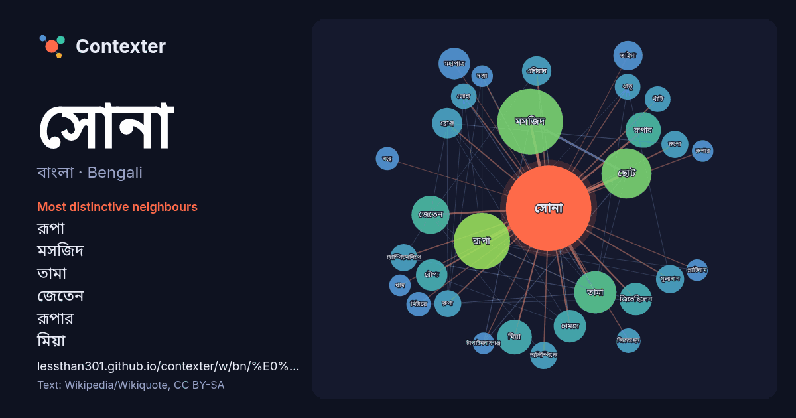

বাংলা · Bengali · word of the day list
সোনা
“gold” · The words found around it in 814 instances from Bengali Wikipedia, Wikiquote.

Most distinctive neighbours
- রূপা 45×
- মসজিদ 34×
- তামা 25×
- জেতেন 21×
- রূপার 19×
- মিয়া 15×
- মহাপাত্র 15×
- জিতেছিলেন 14×
- রৌপ্য 14×
- তাইগা 14×
- গেমসে 13×
- ব্রোঞ্জ 13×
- রুপো 12×
- রুপা 12×
- এশিয়ান 11×
- মূল্যবান 11×
- চ্যাম্পিয়নশিপে 10×
- খাঁটি 10×
- অলিম্পিকে 9.9×
- লোহা 9.7×
× = how many times more often than in general Bengali Wikipedia text.
Most frequent neighbours
- মসজিদ 65
- রূপা 48
- ছোট 38
- তামা 27
- জেতেন 22
- তৈরি 21
- সালে 21
- বড় 20
- সাথে 20
- রূপার 19
- নাম 18
- মিয়া 18
- জয় 17
- হিসেবে 17
- গেমসে 16
- জিতেছিলেন 16
- মিটার 16
- বিভাগে 15
- মহাপাত্র 15
- রৌপ্য 15
In context
- থেকেই অলঙ্কার তৈরীতে সোনা ব্যবহৃত হয়ে আসছে। তখন সোনা বিশুদ্ধিকরণের পদ্ধতিগুলো মানুষের তেমন জানা ছিল না। এ কারণে তখন মূলত সোনা-রুপার সঙ্কর ধাতু তৈরি Wikipedia snippets · সোনা
- ইন্টারনেট মুভি ডেটাবেজে সোনা মহাপাত্র (ইংরেজি) বলিউড হাঙ্গামায় সোনা মহাপাত্র টুইটারে সোনা মহাপাত্র ফেসবুকে সোনা মহাপাত্র ইন্সটাগ্রামে সোনা মহাপাত্র ইউটিউবে Wikipedia snippets · সোনা মহাপাত্র
- সোনা মসজিদ শিরোনামে দুটি মসজিদ রয়েছে। বড় সোনা মসজিদ, ভারতের গৌড়ে অবস্থিত। ছোট সোনা মসজিদ, বাংলাদেশের চাঁপাইনবাবগঞ্জ জেলায় অবস্থিত। এটি একটি দ্ব্যর্থতা Wikipedia snippets · সোনা মসজিদ (দ্ব্যর্থতা নিরসন)
- যদি ১৪ ভাগ সোনা এবং ১০ ভাগ খাদ মেশানো হয় তাহলে প্রাপ্ত সোনাকে বলে ১৪-ক্যারেট সোনা, ১৮ ভাগ সোনা ও ৬ ভাগ খাদ থাকলে বলা হয় ১৮-ক্যারেট সোনা... এরকম। এটাকে Wikipedia snippets · রঙিন সোনা
- আখ্যাত। এর বাইরের দিকে সোনালি রং এর আস্তরণ ছিল, সূর্যের আলো পড়লে এ রং সোনার মতো ঝলমল করত। প্রাচীন গৌড়ে আরেকটি মসজিদ ছিল যা বড় সোনা মসজিদ নামে পরিচিত। এটি Wikipedia snippets · ছোট সোনা মসজিদ
- জন্য সোনা মসজিদ (দ্ব্যর্থতা নিরসন) দেখুন। বড় সোনা মসজিদ ভারতের গৌড়ে অবস্থিত মুসলিম যুগের স্থাপত্য নিদর্শন। গৌড়ের সবচেয়ে বড় মসজিদ হল বড় সোনা মসজিদ। Wikipedia snippets · বড় সোনা মসজিদ
- সোনা জিরানি(বৈজ্ঞানিক নাম: Zographetus satwa (De Nicéville)) এক প্রজাতির ছোট আকারের প্রজাপতি। এরা ‘হেসপেরায়িডি’ গোত্রের এবং 'হেসপেরায়িনি' উপগোত্রের … Wikipedia snippets · সোনা জিরানি
- রোজনামচা "'আমাদের ছোট রাসেল সোনা' প্রকাশিত"। দৈনিক ইত্তেফাক। সংগ্রহের তারিখ ১০ জুন ২০১৯। "শেখ হাসিনার নতুন বই 'আমাদের ছোট রাসেল সোনা' প্রকাশিত"। দৈনিক যুগান্তর। Wikipedia snippets · আমাদের ছোট রাসেল সোনা
More Bengali words
Precomputed on 2026-10-09 with default settings (±5 words, medium corpus). The interactive map can refresh it with live data.